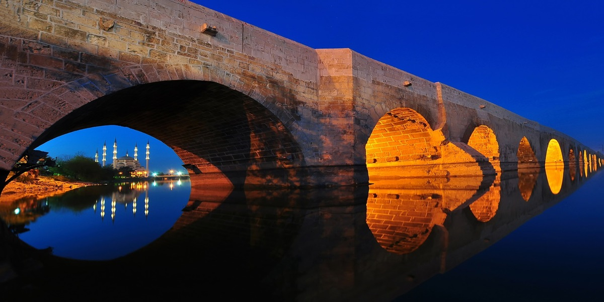
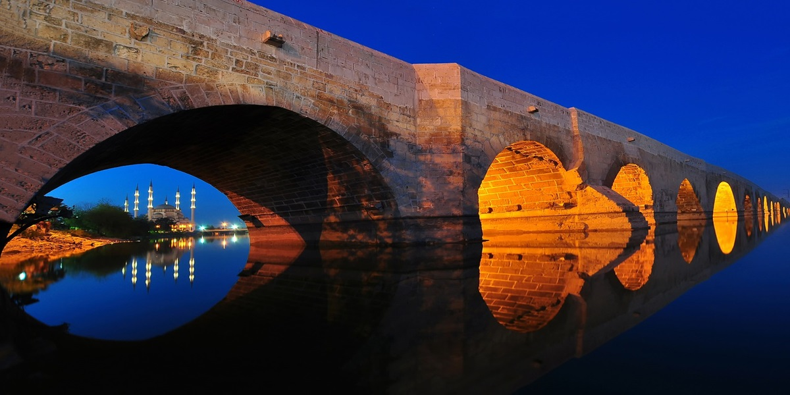

Adana Hakkında
Adana, Türkiye'nin güneyinde yer alan tarihi zenginlikleri, mutfağı ve misafirperver insanlarıyla ünlü bir şehirdir. Seyhan Nehri'nin kıyısında yer alan Adana, özellikle kebabıyla tanınır ve Roma İmparatorluğu'na kadar uzanan bir tarihe sahiptir.
Adana'da Ziyaret Edilmesi Gereken Başlıca Yerler:
- Taş Köprü: Roma döneminden kalma, Seyhan Nehri üzerinde yer alan tarihi bir köprü.
- Adana Ulu Camii: 16. yüzyıldan kalma, Osmanlı mimarisinin harika bir örneği.
- Seyhan Baraj Gölü: Doğal güzellikleri ve su sporları imkânlarıyla dikkat çeker.
- Bir Zamanlar Adana Müzesi: Adana'nın tarihi ve kültürünü keşfetmek için ideal bir yer.
- Adana Arkeoloji Müzesi: Bölgenin tarihi eserlerine ev sahipliği yapar.
Adana'nın Mutfağı
Adana, Adana kebabı ve şalgam gibi lezzetlerle ünlüdür. Ayrıca ciğer kebabı, kadayıf ve bici bici gibi yöresel tatları da mutlaka denemelisiniz.
Ana Sayfaya Geri Dön